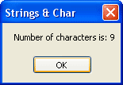

Char and Chars in VB .NET
Char ( NOT Chars)
Char is a variable type. It can hold one character at a time (the Char is short for Character). You set it up like this:
Dim OneCharacter As Char
You can then store a character in the variable like this:
OneCharacter = "A"
Or like this:
Dim OneCharacter As Char = "a"
You can even do this:
Dim OneCharacter As Char = "apple"
But if you try to put a whole word into a Char variable, only the first letter will be retained.
So what good is the Char variable type?
Well, a common use for it is to transfer one letter at a time from a string, and then test to see what this character is. You can test to see if it's a number, for example. Or perhaps to test if the string contains an "@" symbol for a valid email address. We'll test for a number. In the process, we can study the Length property of string variables.
Add another textbox and a button to your form from the first part of the tutorial. Change the Name property of the textbox to txtChars. For the Text property of the Textbox, enter "George123". Double click the new button and enter the following variable declarations:
Dim OneCharacter As Char
Dim FirstName As String
Dim i As Integer
Dim TextLength As Integer
Remember what we're going to be doing here. We're going to put the text from the textbox into a string variable. Then we'll loop round every character in the string to see if it's a number.
So the next line to add to your code is the one that transfers the text from the textbox to the string variable. Add this:
FirstName = Trim(txtChars.Text)
The next thing we need is the length of the string. We need this for the end value of our loop. The length property will give us this answer. So add this line:
TextLength = FirstName.Length
The length property of a string variable tells you how many characters are in the string. You can add a message box to test out your code so far:
MsgBox("Number of characters is: " & TextLength)
Run your programme. Click the button and test out your code. You should see a message box popping up like this one:

So we've found out that "George123" has 9 characters.
We can now loop round each character in the string and test which ones are the numbers. Add the following For loop to your code (you can delete or comment out your message box line now):
For i = 0 To TextLength - 1
Next i
So the For loop starts at zero and ends at the length of the text, minus 1. (It will loop from 0 to 8 in our code - 9 characters. We'll see why you have to deduct 1 soon.
Inside of our loop, we need to grab one character at a time, and then put it into our Char variable. You can do that with the Chars() Property of the string variable type.
No more reading these lessons online - get the eBook here!
Chars (NOT Char)
Chars is a method of the String variable type. You can use it on any length of string, not just a Char variable. And that's the difference between the two: Char is a variable type, while Chars is a method you can use on Strings.
Chars works like this:
OneCharacter = FirstName.Chars(i)
You type the name of your variable, then after the full stop you add Chars(). Inside of the round brackets, you need a number. This number is the position in the string you want to grab. So if you wanted the third letter of a string variable, you'd put this:
Dim SomeString As String
Dim OneCharacter As Char
SomeString = "George123"
OneCharacter = SomeString.Chars(2)
The variable OneCharacter would then hold the third letter - "o".
The reason we've put 2 inside of the round brackets and not 3 is because VB starts counting the characters from zero, and NOT 1. And that's why our For Loop is this:
For i = 0 To TextLength - 1
You have to deduct 1 because the Chars() count starts at zero.
So amend your For Loop to this:
For i = 0 To TextLength - 1
OneCharacter = FirstName.Chars(i)
MsgBox(OneCharacter)
Next i
Run your code, and then click your button. You should get a message box displaying. In fact, you'll get 9 message boxes, one for each character in the string!
Ok, try these exercises to test your new knowledge.
Exercise K
Add an If statement to your For Loop. Check each character of the string "George123". If you find a number, display a suitable message, something like "A number was found". Exit the for loop when the first number is found.
To check if a variable is a number, you can use the IsNumeric( ) function. This function will return either True or False. In other words, if the variable being checked is a number, then IsNumeric( ) is True; if IsNumeric( ) is not a number then False gets returned.
If IsNumeric(OneCharacter) Then
Exercise L
Amend your code to keep a count of how many characters in the string are numbers. Display the count in a message box.
In the next part, we'll take a look at another useful String method - InStr.